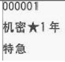

法律
法律
| 立法 | 修法 | 释法 | 监法 | |
|---|---|---|---|---|
| 宪法 | 全国人大 | 全国人大 | 全国人常 | 全国人大/全国人常 |
| 基本法 | 全国人大 | 全国人大/全国人常 | 人常 | 检察院 |
| 非基本法 | 人常 | 人大/人常 | 人常 | 检察院 |
设置限制人身自由仅能通过法律
行政法：除限制人身自由以外的
地方法（有权地方法）：除了限制人身自由、吊销企业营业执照（可以暂扣营业执照。可以吊销许可证）以外的
部门规章、地方政府章：警告、罚
法规
| 法规 | 立法机构 | 表现 |
|---|---|---|
| 行政法 | 国务院 | 条例、办法、规定 |
| 地方性（地级市） | 省、自治区、直辖市人大/人常 设区的市的人大/人常 |
条例、办法、规定 |
| 民族区域自治地方法规 | 自治区、自治州、自治县的人大 | 自治条例、单行条例 |
规章
| 规章 | 立法机构 |
|---|---|
| 地方人民政府规章 | 省自治区、直辖市、设区的市、自治州人民政府 |
| 部门规章 | 国务院各部委、中国人民银行、审计署……直属机构 |
综上：
法的正式渊源（依据）
法律、法规、规章
宪法
宪法价值：公民权利保障书
国体：工人阶级领导，工农联盟为基础的人民民主专政的社会主义国家
政体：人民代表大会
国家结构：单一制（只有一部宪法）
民族乡不属于民族区域自治
国家基本财产制度
公共财产权：社会主义公共财产神圣不可侵犯。
国有：矿产、水、海、城市土地、无线电谱、国防资产
集体：自留山、自留地、宅基地
私有财产：公民合法私有财产不受侵犯侵犯
国家为了公共利益可依法对公民私有财产实行征收、征用并给予补偿『给予补偿，不是合理补偿，不是相应补偿，不是适当补偿，不是赔偿』
公民基本权（*）
公民概念 >人民概念
平等权（不包括立法平等）
政治权利自由
- 选举、被选举
- 政治自由（言论、出版、集会、结社、游行、示威『不多不少，一共六个』）
华侨：有
19岁坐牢：有
18岁精神病人：有
美籍华人：没有
宗教信仰自由（不等于公开传教）
人生自由权
- 人生自由
- 人格尊严
- 住宅不受侵犯（即使是警察也要搜查令）
- 通信自由和秘密
诉愿权
公民对任何国家机关、工作人员享有批评、建议、申诉、控告、检举、依法请求赔偿权利（前两个要无具体行为，后四个要有依据）
社会经济与文化权
- 劳动权——权利 & 义务
- 劳动者休息权（不是休假权）
- 物质帮助权——在年老、疾病、丧失劳动力下，从国家社会获得物质帮助
- 受教育权——权利 & 义务
补充
连任不得超过两届：
- 全人大常委正、副委员长
- 国务院总理、副总理国务委员
- 最高人民法院院长、最高检察院院长、国家检查委员会主任
全国人民代表大会是我国最高国家权力机关,具有最高立法权、最高决定权、最高任免权、最高监督权
人民法院依法独立审判权，不受干涉，上下级是监督关系。
人民检察院依法独立行使监察权，不受干涉，上下级是领导关系。
检查委员会依法独立行使监察权，不受干涉，上下级是领导关系
刑法
犯罪必定违法
违法不一定犯罪
刑法原则
- 罪行法定 - 法务明文规定不为罪
- 适用刑法人人平等
- 罪责刑相适应
犯罪构成
刑事责任年龄
| 年龄段 | 责任承担 | 特殊情况 |
|---|---|---|
| 0~14 | 完全无刑事责任人 | |
| 14~16 | 相对刑事责任人 | 8个罪需要负刑事责任 烧(纵火)、杀(人)、强(奸)、掠(抢)、伤(人)、贩(毒)、爆(炸)、投(毒) |
| 16 + | 完全刑事责任人 |
已满14岁不满18岁的人犯罪，应当从轻、减轻处罚。
已满75岁故意犯罪的，可以从轻、减轻处罚。过失犯罪的，应当从轻、减轻处罚。
又聋又哑的，或者盲人犯罪，可以从轻、减轻 、免除处罚。
精神状态与刑事责任
| 精神状态 | 责任担当 |
|---|---|
| 全疯 | 症时：完全无刑事责任 |
| 半疯 | 轻判 |
| 间歇性 | 疯时：不负刑事责任 不疯：负刑事责任 |
醉酒的人：负刑事责任
又聋又哑或盲人『必须聋+哑，缺一不可』：减轻
犯罪主观方面（*）
| 故意 | 直接故意 | 明知+必然 | 希望 |
|---|---|---|---|
| 间接故意 | 明知+可能 | 放任 | |
| 过失 | 疏忽大意过失 | 应当预见+没有预见 | 反对 |
| 过于自信过失 | 预见+轻信 | 反对 |
作为、不作为
犯罪行为：
- 作为：
- 不作为：构成不作为必须行为人负有特定的义务为前提。
e.g:
女朋友、妈妈落水：
女朋友 - 不救：不犯罪
妈妈 - 不救：犯罪（有赡养义务，构成不作为犯罪）
正当防卫
为使国家、公共利益、本人或者他人的人身、财产和其他权利免受正在进行的不法侵害，而采取的制止不法侵害的行为，对不法侵害人造成损害的，属于正当防卫，不负刑事责任。
条件：
- 防卫起因：存在现实的不法侵害，包括犯罪与违法。
- 时间：防卫时，不法侵害正在进行。
- 意图：具有防卫意识。
- 防卫对象：针对不法侵害人本人的防卫。
- 防卫限度：没有明显超过必要限度并造成重大损失 [超过限度的，负刑事责任，但减轻或者免除]。
特殊正当防卫
无限防卫权：对于正在行凶、杀人、抢劫、强奸、绑架及其他严重危及人身安全的暴力犯罪采取的防卫行为，造成不法侵害人伤亡的，不属于防卫过当，不负刑事责任。
紧急避险
为使国家利益、公共利益、本人或者他人人身、财产和其他权利免受正在发生的危害（包括天灾、动物侵害），不得以采取的紧急避险行为，造成损害的不负责任。
条件：
- 合法权益正面临现实危险
- 危险正在发生
- 具有避险意识
- 不得已损害另一合法权益
- 没超过必要限度（避险引起损失＜避免的损害，超过限度应承担刑事责任，但从轻或免除）
犯罪过程
犯罪预备——实行——结束
| 犯罪过程 | 犯罪定义 |
|---|---|
| 犯罪预备 + 客观原因中止 | 犯罪预备 |
| 犯罪预备 + 主观原因中止（不做了） | 犯罪中止 |
| 犯罪实行 + 主观原因（做一半不做了） | 犯罪中止 |
| 犯罪实行 + 客观原因（被阻止） | 犯罪未遂 |
| 犯罪结束 + 主观原因 | 杀人后救人： 活了——犯罪中止 没活——犯罪既遂 |
| 犯罪结束 + 意志之外未成功 | 犯罪未遂 |
刑罚
刑罚
主刑（独立适用）
- 管制 - 社区矫正（司法局、司法所负责）：原单位、原地劳动，同工同酬。不关押，限制自由，社区矫正。适用于罪小、危害小的。「3个月以上，2年以下，数罪并罚不超过3年 - 323」
- 拘役 - 公安负责：就近限制自由，酌发报酬。适用于罪轻，有一定危害的。「1个月以上，6个月以下，数罪并罚不超过1年 - 161」
- 有期徒刑：剥夺人身自由，强制接受教育、劳改。「半年以上，十五年以下」
- 无期徒刑：剥夺终身自由，强制劳改。「终身」
- 死刑：不轻易判 「犯罪不满18岁、审判时怀孕的妇女不适用死刑；审判时已满75岁的不适用，除非特别残忍手段致人死亡的（法警执行）」
附加刑
罚金（不是行政法里的罚款）
剥夺政治权利：
没收财产
驱逐出境 - 针对外国人
剥夺奖章、勋章和荣誉称号 - 适用军人
累犯：被判处有期徒刑以上刑罚的犯罪分子，刑罚执行完毕或者赦免以后，五年内再犯应当处有期徒刑以上的刑罚之罪的是累犯。应当从重处理（过失犯和不满十八岁的人除外）
特殊累犯：危害国家安全犯罪，恐怖活动犯罪、黑社会性质的组织犯罪的犯罪分子，再刑罚执行完毕或赦免后，任何时候再犯上述任意罪行的，都是累犯。
折抵刑期
- 管制：一比二
- 拘役：一比一
- 管制、主刑、附加刑可以同时进行
行政法
抽象行政行为
e.g：限号
特点：
普遍约束性（不针对个人）
反复适用
- 直接影响
具体行政行为
e.g：罚单
特点：
- 针对个人
- 非反复适用
- 直接影响
行政许可
分类：特许「资源（开矿）、公共资源（教育、公交）、特种（烟草、网吧）」、一般许可（驾照、卫生许可）、认可（教师资格证、律师从业资格证）、核准（检验检疫）、登记（企业注册登记）
行政许可听证
方式：（1）由行政部门主动职权告知（2）依当事人申请
e.g：
甲开矿可能影响乙的店铺生意
| 时限 | 5 | 20 | 7 |
|---|---|---|---|
| 备注 | 5日内告知可申请听证 | 20天内组织 | 7日前将听证时间告知双方 |
| 阶段 | 申请 | 组织 | 开展 |
听证遵循原则
- 公开
- 案外人主持
- 申辩、质证
- 笔录的案卷排包原则
行政申请人与利害关系人不承担费用
行政处罚
一事不再罚原则
种类：警、罚、没、停、扣、留、他（其他）
声誉罚：警告
财产罚：罚款、没收非法财物或所得
行为能力罚：责令停产停业、暂扣活吊销许可证
人身罚：拘留
其他罚：其他
行政处罚决定程序
简易程序
一人执法、当场决定（不是当场交钱）
执法者：表明身份，出具、交付依法填写的统一制作的行政处罚决定书
流程：
- 违法事实确凿并有法定依据
- 处罚：公民（50以下）、法人和组织（1000以下）、警告
一般程序
不适用于简易程序和听证程序的
至少两人，集体开会决定
听证程序
非行政许可听证！
条件（两个都要）：
- 用于大额罚款（个人2000+、企业5000+）、吊销许可或营业执照、停产停业
- 当事人提出听证要求
| 时限 | 3 | 7 |
|---|---|---|
| 备注 | 行政机关告知可提出听证后三天内提出申请 | 开始7天前通知时间、地点 |
| 阶段 | 提出听证申请 | 告知 |
方式：公开（涉及国家机密、商业机密及个人隐私除外）
笔录：不作为行政处罚唯一依据
行政强制
为实现行政目的，对相对人的人身、财产、行为采取的措施。
e.g：
罚款200 -> 15天内不缴纳 -> 强制冻结（措施 - 暂时性） -> 强制执行 滞纳金 （执行 - 永久）
- 强制措施
- 限制公民人身自由（盘问、留置、约束、强制带离现场）
- 查封场所、设施、财物
- 扣押财物
- 冻结存款、汇款
- 强制执行
- 加处罚款或滞纳金
- 划拨存款、汇款
- 拍卖或依法处理查封、扣押的场所、设施、财物
- 排除妨碍、恢复原状
- 代履行
行政复议
公民、法人与其他组织认为行政主体具体行为侵犯其合法权益，提出复议。
行政复议后不满意可以到法院进行行政诉讼，但行政诉讼后不能转行政复议。
复议（不是行政诉讼）排除事项：（1）行政机关处分、其他人事处理决定（2）行政机关对民事纠纷作出的调解或其他处理（国家行为、仲裁、指导）。
具体行政行为都可复议。
复议机关
直属机构：
e.g：海关
县海关 -> 市海关 -> 省海关 -> 国务院
非直属机构：
e.g：国务院XX部 省XX厅 市XX局
| 本级 | 复议机关 |
|---|---|
| 省部级 | 原机关自己（审理结构变化） |
| 省级人民政府 | 国务院 |
| 厅级 | 省级人民政府、部级 |
| 市级人民政府 | 省级人民政府 |
| 市局 | 市级人民政府、厅级 |
| 区县级人民政府 | 市级人民政府 |
省部级 - 原单位自己（不服的可以起诉到国务院）
省级以下 - 上一级
垂直领导 - 上一级（海关、国安）
县级以上部门 - 同级或上一级
政府派出机关 - 设立的政府（区公所、街道办事）
部门派出机关 - 机构所在部门或该部门同级政府（派出所、税务所）
部门派出的仅能警告和500以下罚款，不能作出拘留决定
行政诉讼
不受理的情况
- 国务院最终裁决了的
- 抽象行政行为（如法律、法规）
- 国家行为
- 行政指导行为
- 刑事司法行为
- 行政调解、仲裁
- 内部行政行为
- 对公民、法人或其他组织权利义务不产生实际影响的行为
- 驳回当事人对行政行为提起申诉的重复处理行为
行政诉讼管辖
地域管辖：
一般地域管辖：
- 原告就被告（最初作出行政行为的行政机关所在地或经复议的案件也可以在复议机关所在地）
特殊地域管辖：
- 对限制人身自由的行政强制措施不服提起的诉讼，由被告所在地或者原告所在地人民法院管辖（三个地方：原告户籍地、常住地、被限制人身自由地）。当事人选择其中之一进行诉讼时，按我国行政诉讼的管辖规定，可以就行政行为造成人身损失和财物损失都在同一法院诉讼，而不是分别提起诉讼
- 因不动产提起的诉讼，由不动产所在地人民法院管辖
共同地域管辖：多个法院都可以管的，任选。
级别管辖
- 最高人民法院
- 高级人民法院 - 省 / 二审，终审
- 中级人民法院 - 市：
- 确认发明专利案件和海关处理案件；
- 对国务院各部门或者省、自治区、直辖市人民政府所作的具体行政行为提起诉讼的案件;
- 本辖区内重大、复杂的案件。这里的“本辖区内重大、复杂的案件”，根据《若干解释》第8条的规定，有下列几种情形：①被告为县级以上人民政府，基层人民法院不适宜审理的案件；②社会影响重大的共同诉讼、集团诉讼案件；③重大涉外或者涉及香港特别行政区、澳门特别行政区、台湾地区的案件；④其他重大、复杂案件。（对国务院部门不满的；对县级及以上人民政府不满的；对海关等不满的）
- 基层人民法院 - 县 第一审行政案件（对厅级人民政府部门不满的，告所在地基层法院；对县教育局不满的）
民法
民法是调整平等主体的自然人、法人和非法人组织之间的人生、财产关系。
民法基本原则：
- 平等
- 自愿
- 公平
- 诚信
- 不得违反法律、不得违反公序良俗
- 节约资源、保护生态（绿色）
民事行为能力
| 行为能力 | 备注 |
|---|---|
| 完全民事行为能力 | （1）18岁以上精神正常的公民 （2）16岁以下不满18岁的公民，以自己劳动收入为主要生活来源。 |
| 限制民事行为能力 | （1）8周岁以上未成年人 （2）不能完全辨认自己行为的精神病人 |
| 无民事行为能力 | （1）不满8周岁的未成年人 （2）不能辨认自己行为的精神病人 |
限制民事行为能力人：他们实施民事法律行为由其法定代理人代理或经其法定代理人同
意、追认,但可以独立实施纯获利益的民事法律行为或者与其年龄、智力相适应的民事法律行为。
民事责任
过错责任原则：有错担错
过错推定原则（除非证明无错）
无过错原则：严格责任原则（无论是否有责任，都要承担）
特殊侵权责任
- 监护人侵权责任：无过错责任原则 - 无民事行为或限制民事行为能力人造成他人损失的，由监护人承担
- 教育机构：
- 无民事行为人受损害，学校责任：采取过错推定原则（如幼儿园，除非能够证明尽到教育、管理职责的）
- 限制民事行为能力人受损的学校责任：采取过错原则，有错担错（未尽到教育、管理职责的应当担责）
- 产品：采取无过错原则 - 销售生产连带原则（因产品缺陷致人损害的，只要受害人能够证明损害事实由产品缺陷引起）
- 饲养动物：
- 对于一般主体饲养的，适用无过错原则
- 对于动物园：适用过错推定原则
宣告失踪、死亡
宣告失踪条件：
- 有下落不明事实
- 下落不明满2年
- 必须是利害关系人向人民法院申请
- 必须经过人民法院依法宣告
宣告失踪后，失踪人财产由配偶、成年子女、父母或其他愿意承担财产代管人的人代管。
宣告死亡条件：
- 须经过利害关系人申请
- 下落不明一定期限（下落不明满4年；意外事故下落不明2年；因意外事故下落不明，经过有关机构证明该自然人不可能生存的，宣告死亡不受2年限制）
- 需要人民法院宣告
宣告死亡的法律后果与自然死亡的法律后果相同。
宣告失踪不是宣告死亡的闭经程序
效力待定的民事行为
无权处分
无权代理
限制民事行为能力人超越民事行为能力的行为
未经债权人同意的债务转移行为
A欠B钱，B欠C钱，B对A说：直接还给C就行（未经过C许可，无效）。
人身权
人格权（包括生命权、身体权、健康权、姓名权、名称权、肖像权、名誉权、荣誉权、隐私权等权利）
身份权（基于一定身份，如配偶权）
物权
- 所有权：所有权人依法对自己的财产享有占有、使用、收益和处分的权利
- 他物权：权利人根据法律规定或合同的约定，对他人之物享有的进行有限支配的物权，包括占有，使用，收益的权利（没有处分权）
- 准物权：大陆法国家对民法物权以外某些对世财产权的统称
物权变动模式
动产：设立与转让自交付时发生效力，法律另规定的除外
不动产：设立、变更、转让、消灭需要经过依法登记、发生效力（除另外规定，未登记的一律无效）
所有权
- 继受取得：一定法律行为或法律事实从原所有人处取得 - 合同、继承、赔与
- 原始取得：所有权首次产生或不依赖原所有人的意志而取得的 - 生产、先占、善意取得、发现埋藏物、国有化、没收
担保物权
抵押权、质权约定适用
- 抵押权（不转移占有、动产&不动产）- 房子担保
- 质权（转移占有、动产质权&权利质权）- 只能交付动产质权或者权利质权，如人质
- 留置权（法定担保物权、已经合法占有、只能是动产）- 只能是动产。如修电脑，未付款，过时不取，占有。
善意取得
- 受让人受让（转让的反义词）不动产时是善意的
- 以合理的价格转让
- 转让的不动产或动产依法应当登记的已经登记，不需要登记的已经转让、交付给受让人
不当得利
- 一方获得利益
- 他方受损失
- 得利和损失有因果关系
- 获利没有合法根据
无因管理
- 没有法定或者约定的义务
- 有为他人某利益的意思
- 为他人管理事务
无因管理一旦成立，管理人有权要求本人偿还因管理支出的必要费用、利息、损失。
知识产权
- 著作权 ：作者的署名权、修改权、保护作品完整权的保护期不受限制，发表权和所有著作财产权的保护期为作者终生以及死后50年。
- 专利权：发明专利期限20年；实用新型专利和外观设计专利的期限为10年，均从申请之日计算。
- 商标权：在我国。商标权取得遵循注册原则和先申请原则。商标权的使用期限、注册商标的有效期为10年，自核准注册之日开始计算。
诉讼时效
一般：向人民法院请求保护民事权利的诉讼时效为3年。
特殊：
- 未成年人收性侵侵害的损害赔偿请求权的诉讼时效，自受害者年满18岁之日开始计算。
- 时效一年的：
- 身体受到伤害要求赔偿的
- 出售质量不合格未声明的
- 延付、拒付租金的
- 寄存财物被丢失或损毁的
- 环境诉讼：从当事人知道或应当知道其遭受损害开始计算
起算：从知道或应当知道权利被侵害时开始计算。但从权利被侵害之日超过20年的不与保护。有特殊情况的可以延长。
劳动法
工作时间
国家实行劳动者每日工作时间不超过 8 小时，平均每周工作时间不超过 44 小时的工作制度。用人单位由于生产经营需要,经与工会和劳动者协商后可以延长工作时间,一般每日不得超过 1 小时;因特殊原因需要延长工作时间的,在保障劳动者身体健康的条件下延长工作时间每日不得超过 3 小时,但是每月不得超过 36 小时。但有下列情形时,延长时间不受此限制:发生自然灾害、事故或者因其他原因,威胁劳动者生命健康和财产安全,需要紧急处理的;生产设备、交通运输线路、公共设施发生故障,影响生产和公众利益,必须及时抢修的;法律、行政法规规定的其他情形。用人单位不得违反《劳动法》规定延长劳动者的工作时间。
简略：日8周44。协商可延长，一般日不超1小时；特殊原因需要延长的，日不过3小时，周不过36小时。天灾、事故、紧急情况等除外。
休假
- 用人单位应当保证劳动者每周至少休息 1 日。
- 用人单位在下列节日期间应当依法安排劳动者休假;元旦;春节;国际劳动节;国庆节;法律、法规规定的其他休息假节日。
- 国家实行带薪年休假制度。职工累计工作已满 1 年不满 10 年的,年休假 5 天;已满 10 年不满 20 年的,休假 10 天;已满 20 年的,年休假 15 天。
劳动争议解决
- 调解
- 仲裁
- 诉讼
- 协商
无固定期限劳动合同
- 除非劳动者提出订立固定期限劳动合同外，应当订立无固定期限劳动合同的情况：
- 劳动者在该用人单位连续工作满十年，且距离法定退休年龄不足十年的；
- 连续订立两次固定期限劳动合同，且劳动者没有《劳动合同法》39、40第1、2项规定情形，续订劳动合同的。
- 用人单位自用工之日起满一年不与劳动者订立书面劳动合同的，视为用人单位与劳动者已订立无固定期限劳动合同。
劳动合同的解除
劳动者单方解除
无条件单方解除（预告解除）：劳动者提前30日以书面形式通知用人单位，可以解除劳动合同。劳动者在试用期内提前3天内通知用人单位，可以解除劳动合同。
有条件单方解除（单位过错）
- 未按照劳动合同约定提供劳动保护或者劳动条件的
- 未及时足额支付劳动报酬的
- 未依法为劳动者缴纳社会保险费的
- 用人单位的规章制度违反法律、法规的规定，损害劳动者权益的
- 违反《劳动合同法》26条第1款致使劳动合同无效的
- 法律、行政法规规定劳动者可以解除劳动合同的其他情形。
用人单位以暴力、威胁或者非法限制人身自由的手段强追劳动者劳动的,或者用人单位违章指挥、强
令冒险作业危及劳动者人身安全的,劳动者可以立即解除劳动合同,不需事先告知用人单位。
用人单位单方解除劳动合同
- 劳动者有下列情形之一的，用人单位可随时解除劳动合同（过错性解除）
- 在试用期间被证明不符合录用条件的
- 严重违反劳动纪律或用人单位规章制度的;
- 严重失职,营私舞弊,对用人单位造成重大损害的;
- 劳动者同时与其他用人单位建立劳动关系,对完成本单位的工作任务造成严重影响,或者经用人单位提出,拒不改正的
- 劳动合同无效的
- 被依法追究刑事责任的
- 有下列情形之一的,用人单位提前 30 日以书面形式通知劳动者本人或者额外支付劳动者 1 个月工资后,可以解除劳动合同(提前通知解除)。
- 劳动者患病或者非因工负伤,在规定的医疗期满后不能从事原工作,也不能从事由用人单位另行安排的工作的;
- 劳动者不能胜任工作,经过培训或者调整工作岗位,仍不能胜任工作的;
- 劳动合同订立时所依据的客观情况发生重大变化,致使劳动合同无法履行,经用人单位与劳动者协商,未能就变更劳动合同内容达成协议的。
不得提前解除劳动合同的情况（对用单位单方解除劳动合同的限制—劳动者有以下情形的,用人单位不得“提前通知解除”劳动合同）
- 从事接触职业病危害作业的劳动者未进行离岗前职业健康检查,或者疑似职业病病人在诊断或者医学观察期间的;
- 在本单位患职业病或者因工负伤并被确认丧失或者部分丧失劳动能力的;
- 患病或者非因工负伤,在规定的医疗期内的;
- 女职工在孕期、产期、哺乳期的;
- 在本单位连续工作满 15 年,且距法定退休年龄不足 5 年的
- 法律、行政法规规定的其他情形
- 劳动者有下列情形之一的，用人单位可随时解除劳动合同（过错性解除）
事业单位管理条例
事业单位与工作人员订立的聘用合同,期限一般不低于 3 年。初次就业的工作人员与事业单位订立的聘用合同期限 3 年以上的,试用期为 12 个月。
事业单位工作人员连续旷工超过 15 个工作日,或者 1 年内累计旷工超过 30 个工作日的,事业单位可以解除聘用合同。
事业单位工作人员年度考核不合格且不同意调整工作岗位,或者连续两年年度考核不合格的,事业单位提前 30 日书面通知,可以解除聘用合同。
事业单位工作人员提前 30 日书面通知事业单位,可以解除聘用合同。但是,双方对解除聘用合同另有约定的除外。
考核分为平时考核、年度考核和聘期考核。 年度考核的结果可以分为优秀、合格、基本合格和不合格等档次,聘期考核的结果可以分为合格和不合格等档次。
处分分为警告、记过、降低岗位等级或者撤职、开除。受处分的期间为:警告,6 个月;记过,12 个月;降低岗位等级或者撤职,24 个月。
经济常识
市场经济理论、微观经济、宏观经济、国际经济
市场经济
资源配置方式的一种，另一种是有计划配置
特点：
- 事后、高级
- 有盲目、自发、滞后的缺点
- 市场主体（居民、企业[核心]、政府 —> 参与的主体多元）、客体（交易的东西）
企业：个人业主制（个人独资）、合伙制（两人以上，责任连带）、公司制（股东出资）
市场体系三大支柱
三大支柱：商品市场、资本市场、劳动力市场
目标：统一、开放、竞争、有序大市场
市场机制
- 价格机制（主要、核心）
- 供求机制
- 竞争机制
- 风险机制（破产）
微观经济
供求法则
需求：指有效需求
影响需求的因素：
- 自身价格
- 消费者收入水平
- 相关商品价格（代替品、互补品）
- 消费者偏好
- 消费者对商品价格预期
需求定理：价格、需求成反比
- 需求价格弹性：物品价格变动，引起需求量大小变化（奢侈品：需求价格弹性大；大米：需求价格弹性小，刚需）
影响需求价格弹性的因素：
- 奢侈品、必需品
- 有无代替品
- 人们对价格变动的反应
供给：生产者愿意并能够生产的数量，主要由价格影响（正比）
市场类型
- 完全竞争
- 垄断竞争
- 寡头竞争
- 垄断竞争
价格歧视：针对不同人群价格不同
市场失灵
资源配置不当
帕累托最优：公平、效率
市场失灵的原因：
- 垄断——国家限制
- 外部
- 公共——“搭便车”现象—>国家提供
- 信息不对称
宏观经济
四大目标：促进经济增长、增加就业、稳定物价、保持国际收支平衡
促进经济增长
增长（量的增长）与发展——各方面
拉动国民经济的三驾马车：投资、消费、出口
GDP——国内生产总值——市场价值概念
一个国家、地区一定时期内的市场价值，十一个地区范围，地域概念
GNP——国民生产总值——国民概念
GDP是
- 市场价值概念
- 测量的是最终产品
- 是一定时期内所生产的，而不是卖掉的。
- 记录的是流量而不是存量
- 仅指市场活动导致的价值（家务、自给自足、二手不计入内）
增加就业
失业率衡量：城镇登记失业率 4.5%是正常范围。
失业：有劳动力、愿意就业的，却没有工作的
失业率：失业人口/劳动人口
劳动人口：法定年龄、有劳动力、积极找工作的人
自然失业：难以避免的原因引起的失业（不满工资、不满老板），一般认为自然失业率在5%
充分就业：实际失业率 = 自然失业率时，叫做充分就业。充分就业不等于没有失业。
失业类型：摩擦性失业、结构性失业、季节性失业、周期性失业（前两者属于自然性失业）
稳定物价
CPI：消费物价指数——相对数
WPI：批发物价指数
从短期看，通货膨胀和失业率成反比；从长期看没有关系。
国际收支平衡
- 收入>支出：出口>进口：赚；顺差
- 收入<支出：出口<进口；赔；逆差
宏观调控
- 手段：
- 经济手段（经济计划「十三五计划…」、经济政策「财政政策、货币政策、产业、收入分配」）
- 法律手段
- 行政手段
经济、国际经济
财政政策：盈余、赤字
财政收入：
税：强制、无偿、固定（个人税3000-5000）（营业税 改 增值税）
利：国有企业利润
债：公债（国债、地方债）
费：收费（工本费…）
财政支出：
- 政府购买：政府对商品和劳务购买，雇员工资，公共项目（实质性支出）
- 政府转移支付：不以本年商品和劳务为目的（社会福利、卫生支出、医保…）
财政政策应用：
- 经济萧条：通货紧缩、货币少、供大于求——刺激需求（多印钞票、税收下调、财政支出增多、发行国债「央行购买」）
- 经济过热：通过膨胀、货币多、供小于求——减少需求（税收上调、财政支出减少、债券发行减少）
货币政策：
中央银行为主导：法定存款准备金、再贴现率、公开市场业务、利率
财政政策——积极的财政、货币政策——稳健的货币政策
产业政策
第一产业：农林牧渔
第二产业：采矿、制造
第三产业：服务业
收入分配
- 国民收入分配
- 初次分配：工资、奖金（企业、公司）
- 再次分配：收税、补贴（国家给的）、五险一金
- 基尼系数：0~1
- 0-0.2：平均
- 0.2-0.3：较平均
- 0.3-0.4：合理（国际：0.4）
- 0.4-0.5：收入差距较大
- 0.6-1：收入差距悬殊
- 恩格尔系数,就是指食品支出总额占个人消费支出总额的比重。
- 社会结构：
- 金字塔（不合理）
- 哑铃（不合理、两极分化）
- 橄榄形（合理）
- 国际组织：WTO、IMF、WBG
- 经济全球化：
- 贸易自由化
- 生产国际化
- 资本全球化
- 科技全球化
- 决定力：市场机制
- 主导：跨国公司
- 推动：科技进步
- 国民收入分配
管理学
公文
公文种类
| 种类 | 适用 | 示例 |
|---|---|---|
| 决议 | 适用于会议讨论通过的重大决策事项。 | 如《中国共产党第十八次全国代表大会关于十七届中央委员会报告的决议》 主体:党的领导机关或权力机关。具有权威性,指导性 |
| 决定 | 适用于对重要事项作出决策和部署、奖惩有关单位和人员(这个人的级别较高,影响比较大)、决定变更或者撤销下级机关不适当的决定事项。 | 如《中共中央关于深化文化体制改革推动社会主义文化大发展大繁荣若干重大问题的决定》、《中共中央纪律检查委员会关于开除薄熙来党籍的决定》 主体:党的机关、行政机关、权力机关、司法机关的领导机关。具有决策性、制约性 |
| 命令（令） | 适用于公布行政法规和规章、宣布施行重大强制性措施、批准授予和晋升衔级、嘉奖有关单位和人员。 | 如财政部颁发命令公布《事业单位会计准则》,习近平颁发命令晋升二炮司令为上将。 主体:行政机关、国家主席。权威性、强制性、专用性 |
| 公报 | 适用于公布重要决定或者重大事项。 | 《如中国共产党第十八届中央委员会第一次全体会议公报》 党政机关、人民团体。权威性、指导性、新闻性 |
| 公告 | 适用于向国内外宣布重要事项或者法定事项。 | 如全国人大选举胡锦涛为国家主发席要发布公告,我国在东海举行军事演习要向国内外发布公告。 权力机关、行政机关。广泛性、重大性、公开性 |
| 通告 | 适用于在一定范围内公布应当遵守或者周知的事项。 | 如《XX 电力工业局关于使用定期借记业务结算方式的通告》。通告的结语:”特此通告”或“本通告自发布之日起实施”广泛性、规范性 |
| 意见 | 适用于对重要问题提出见解和处理办法。 | 如《教育部 中央编办 财政部 人力资源社会保障部关于加强幼儿园教师队伍建设的意见》 |
| 通知 | 适用于发布、传达要求下级机关执行和有关单位周知或者执行的事项,批转、转发公文。 | 《财政部 教育部关于切实加强义务教育经费管理的紧急通知》告知、教育 |
| 通报 | 适用于表彰先进、批评错误、传达重要精神和告知重要情况。 | 《××××自治区人民政府关于柳州市壶东大桥特大交通事故的通报》 |
| 报告 | 适用于向上级机关汇报工作、反映情况,回复上级机关的询问。 | 《××××关于×××的报告》具有单向性、具有事后性 |
| 请示 | 适用于向上级机关请求指示、批准。 | 《公安部关于将 12 月 2 日设立为“全国交通安全日”的请示》 一文一事 |
| 批复 | 适用于答复下级机关请示事项。 | 《国务院关于同意设立“全国交通安全日”的批复》 被动,针对性、明确性 |
| 议案 | 适用于各级人民政府按照法律程序向同级人民代表大会或者人民代表大会常务委员会提请审议事项。 | 《国务院关于提请审议<中华人民共和国劳动法(草案)>的议案》同级别 |
| 函 | 适用于不相隶属机关之间商洽工作、询问和答复问题、请求批准和答复审批事项。 | 《卫生部关于商请做好蜂胶产品监督管理工作的函》 级别相同,不相隶属,沟通性,灵活性,单一性,一文一事 |
| 纪要 | 适用于记载会议主要情况和议定事项。 | 《全国 财贸工会 工作会议 纪要 》、《关 于落实省 委领导同志批示保护省级文物七级浮屠塔问题的会议纪要》 内容,表达具有要点,称呼具有特定性(第三人称),可以不加盖公章 |
一共15个文种。
国家行政机关公文：在原有13个文种基础上增加了决议和公报。
党的机关公文废止3种（指示、条例、规定），增加命令、通告、公告、议案。
公文格式
三部分：版头、主体、版记
版头
份号：公文印制份数的顺序号。涉密公文应当标注份号——一般用 6 位 3 号阿拉伯数字,顶格编排在版心左上角第一行。不足 6 位,前面补“0”
密级和保密期限：涉密公文应当根据频密程度分别标注“绝密”“机密”“秘密”和保密期限——一般用 3 号黑体字,顶格编排在版心左上角第二行;保密期限中的数字用阿拉伯数字标注。密级和保密期限间插入一个“★”
国家秘密的密级分为“绝密”、“机密”“秘密”三级：
(1)“绝密”是最重要的国家秘密,泄露会使国家的安全和利益遭受特别严重的损害;保密期最高 30 年
(2)“机密”是重要的国家秘密,泄露会使国家的安全和利益遭受严重的损害,保密期最高 20 年
(3)“秘密”是一般的国家秘密,泄露会使国家的安全和利益遭受损害,保密期最高 10 年如需同时标注份号、密级和保密期限、紧急程度,按照份号、密级和保密期限、紧急程度的顺序自上而下分行排列。如图“机密”“特急”“1 年”等词中间不插空格,★与上行的“1”对齐，如图：

紧急程度：根据紧急程度,紧急公文应当分别标注“特急”“加急”,电报应当分别标注“特提”“特急”“加急”“平急”——一般用 3 号黑体字,顶格编排在版心左上角
公文紧急程度：
“特提”电报需要马上办理；“特急”电报需在8小时内阅办；“加急”需在24小时内阅办；“平急”电报阅办不超过48小时。
“特提”是要求一天之内办完的电报，“特急”是要求三天之内办完的电报，“加急”是要求五天之内办完的电报，“平急”是要求十天之内办完的电报。
发文机关标志：由发文机关全称或者规范化简称加“文件”二字组成,也可以使用发文机关全称或者规范化简称。如: “中共中央文件”“河北省人民政府文件”——居中排布,上边缘至版心上边缘为 35mm,推荐使用小标宋体字,颜色为红色,以醒目、美观、庄重为原则
联合行文时,如需同时标注联署发文机关名称,一般应当将主办机关名称排列在前;如有“文件”二字,应当置于发文机关名称右侧,以联署发文机关名称为准上下居中排布
联合行文应当是同级单位,按党、政、军、群的顺序排列
主要作用是:强调公文法定作者的归属,唤起受文者对公文权威性的警觉
发文字号：发文机关代字+年份+发文顺序号,如中办发〔2012〕14 号。不写“年”字,不写“第”字——编排在发文机关标志下空二行位置,居中排布。年份、发文顺序号用阿拉伯数字标注;年份应标全称,用六角括号“〔〕”括入;发文顺序号不加“第”字,不编虚位(即1 不编为 01)
,在阿拉伯数字后加“号”字，上行文的发文字号居左空一字编排,与最后一个签发人姓名处在同一行。联合行文时,使用主办机关的发文字号。
签发人：上行文应当标注签发人姓名。表示公文生效并对公文内容郑重负责的一个标志——由“签发人”三字加全角冒号和签发人姓名组成,居右空一字,编排在发文机关标志下空二行位置。“签发人”三字用 3 号仿宋体字,签发人姓名用 3 号楷体字。
如有多个签发人,签发人姓名按照发文机关的排列顺序从左到右、自上而下依次均匀编排,一般每行排两个姓名,回行时与上一行第一个签发人姓名对齐。
版头中的分割线：发文字号之下4mm处居中印一条与版心等宽的红色分割线。
主体
标题：用于提示公文的主要内容,是公文主旨的高度概括——发文机关+事由+文种
标题起提示作用,应准确、简要、概括。
标题中,除批转的法规、规章名称加书名号外,一般不用标点符号。用 2 号小标宋体字,编排于红色分隔线下空二行位置,分一行或多行居中排布。
回行时,要做到词意完整,排列对称,长短适宜,间距恰当,标题排列应当使用梯形或菱形。人名、地名不能分割成两行表示。
- 标题拟定三种毛病:
- 三要素不全
- 事由模糊,如“××关于××拾金不昧的通报”
- 语言啰嗦
- 标题拟定三种毛病:
主送机关：公文的主要受理机关,应当使用机关全称、规范化简称或者同类型机关统称——编排于标题下空一行位置,居左顶格,回行时仍顶格,最后一个机关名称后标全角冒号。
一般是同级单位。标点符号:同级同类用顿号,同级不同类用逗号。如“各省、自治区、直辖市人民政府,国务院各部委、直属机构”。
如主送机关名称过多导致公文首页不能显示正文时,应当将主送机关名称移至版记。
正文：公文的主体和核心,用来表述公文的内容,位于主送机关之下,成文日期之上——公文首页必须显示正文。一般用 3 号仿宋体字,编排于主送机关名称下一行,每个自然段左空二字,回行顶格。
文中结构层次序数依次可以用“一、”“(一)”“1.”“(1)”标注;一般第一层用黑体字、第二层用楷体字、第三层和第四层用仿宋体字标注。
附件说明：公文附件的顺序号和名称——如有附件,在正文下空一行左空二字编排“附件”二字,后标全角冒号和附件名称。如有多个附件,使用阿拉伯数字标注附件顺序号(如“附件:1. XXXXX”);附件名称后不加标点符号。附件名称较长需回行时,应当与上一行附件名称的首字对齐。
发文机关署名、成文日期、印章：
- 发文机关署名:俗称落款。署发文机关全称或者规范化简称
- 成文日期:署会议通过或者发文机关负责人签发的日期。联合行文时,署最后签发机关负责人签发的日期
- 印章:公文中有发文机关署名的,应当加盖发文机关印章,并与署名机关相符。有特定发文机关标志的普发性公文和电报可以不加盖印章
- 加盖印章：成文日期一般右空四字编排,印章用红色,不得出现空白印章不加盖印章。
- 加盖签发人签名章的
- 成文日期中的数字
其他
- 五大思维能力:战略、底线、历史、辩证、创新。
法学本科
常见的归责原则
https://lvlin.baidu.com/question/762151026011450124.html
https://zhuanlan.zhihu.com/p/523637178
与侵权责任相反，违约责任的基本归责原则是无过错责任。
但五类合同为例外\，采过错责任：赠与合同的赠与人，客运合同的承运人对于旅客的自带物品，保管合同、仓储合同的保管人，委托合同的受托人。其中，赠与合同的赠与人，无偿的保管、委托合同的保管人、受托人，仅在重大过失、故意才承担责任。
1、过错责任原则
是指以过错作为归责的最终构成要件。即行为人的侵权行为给对方造成损害，须行为人在主观上存在过错才承担相应的民事责任。过错责任是侵权责任的一般归责原则，除法律法规规定的特别侵权行为外，一般侵权行为均适用过错归责原则。
2、过错推定责任原则
是指基于法律的特别规定，推定加害人存在过错而应承担侵权责任，加害人能够证明自己没有过错的除外。
过错推定责任原则主要情形有：
(1)机动车与非机动车驾驶人、行人之间发生交通事故，机动车驾驶者适用过错推定;
(2)建筑物、构筑物或者其他设施及其搁置物、悬挂物发生脱落、坠落，建筑物、构筑物或者其他设施倒塌致人损害，堆放物致人损害，适用过错推定;
(3)林木折断造成他人损害，对林木所有人或管理人适用过错推定;
(4)动物园发生动物致人损害时，对动物园适用过错推定;
(5)幼儿园、学校或者其他教育机构因未尽到教育、管理职责致在其学习、生活的无民事行为能力人或者限制民事行为能力人受到人身损害，教育机构应承担相应责任，除非教育机构能证明其已尽管理职责。
3、无过错责任原则（严格责任原则）
又称严格责任原则，是指基于法律的特别规定，受害人能够证明损害是加害人的行为或者物件所致，加害人就应当承担民事责任，而不论其是否存在主观上的过错，除非加害人能够证明存在法定抗辩事由。
目前法律规定承担无过错责任的情形主要由：
(1)被监护人致人损害，监护人承担无过错责任;
(2)用人单位对工作人员的行为侵害他人承担无过错责任;
(3)个人之间形成劳务关系，提供劳务一方因劳务造成他人损害，由接受劳务一方承担侵权责任;
(4)产品缺陷致人损害时，生产者承担无过错责任;
(5)高度危险作业致人损害的，侵害人承担无过错责任;
(6)环境污染致人损害的，排污单位承担无过错责任;
(7)饲养的动物致人损害的，饲养人承担无过错责任。
4、公平责任原则
是指加害人和受害人对造成的损害事实均没有过错，而根据公平的观念，在考虑当事人的财产状况、支付能力等实际情况的基础上，由双方分担损失。
民事侵权的归责原则是比较多的，根据《民法典》的规定，高空坠物适用的是无过错责任原则。具体来讲，只要某楼层的业主，并不能提供相关证明自己在高空坠物事件发生的时候不在现场或坠落物与自身无关而免予承担责任的证据，那么就需要承担损害赔偿责任。
法学本科毕业论文选题参考
2023年6月14日
论文四步曲
概念界定
现状分析
问题及原因
改进措施
选题参考
注意：本文仅供参考！本文虽为原创，但本人非该专业全日制学生，仅供参考，慎用！
个人破产制度构建中债权人的权利保护的研究
一、个人破产制度概述
（一）破产的含义
（二）个人的含义
（三）个人破产制度的含义
二、个人破产制度构建的意义
（一）实现债权人债务人利益平衡
个人破产有助于实现债权人集体清偿，保护债权人利益
个人破产法有助于债务人重新开始
（二）社会稳定方面
- 社会保障，减少社会资源使用
（三）司法方面
- 健全我国破产法体系，解决法院执行难的问题
- 可行性(试点地区、信用体系)
三、法律现状
积极探索阶段，浙江温州、深圳开山。
四、存在问题
（一）滥用风险
- 信用体系的冲击
（二）门槛问题
- 免责的撤销
- 金融风险(可能出现集体破产)
五、改进措施
- 需要信用体系的支持，健全执行程序，建立专门的破产审判与管理机构
- 欺诈行为惩罚措施(刑事化)(破产代价)
- 看门人制度(申请门槛，防滥用)
- 延长勘察期
- 防范欺诈性转移财产(打破信托隔离)
- 职业限定
- 基于破产原因差异化清偿
草稿：
1 | 摘 要 |
过度维权行为界定问题的研究——以三个典型案例为视角
一、案例简介
（一）被强制开出的女孩，咋成了”被告“——河南省高级人民法院典例（维权手段过激）
（二）”郭利敲诈勒索“案（系合理维权非敲诈勒索）
（三）职业打假人索要巨额“保护费”（非合理范围内的索财行为系敲诈勒索）
二、过度维权概述
（一）过度维权的内涵
（二）过度维权的特征
手段过激
事发有因
索赔数额不合理
行为人特定
（三）过度维权分类
”非法占用型“过度维权与敲诈勒索罪类比
”非法行使权利型“与防卫过度类比
（四）过度维权的诱因
维权者法律意识不足，维权手段不当
非法占有为目的
三、过度维权界定的意义
（一）过度维权危害
社会资源浪费
权利滥用
（二）缺乏界定的危害
公信力缺失(同案异判)
正当维权积极性受打击(被判敲诈勒索)
四、如何界定
（一）界定权利是否被恶意滥用
（二）界定赔偿金额与非法占有
（三）维权目的正当性
（四）特殊化食品药品等公共安全方面的打假，支持合理索赔
1 | 河南省高级人民法院,被强制开除的女孩，咋成了“被告”[EB/OL].http://kfxffy.hncourt.gov.cn/public/detail.php?id=1450，2022.10 |
关于城区动物侵权事件责任主体认定的研究
一、城区动物侵权来源
（一）饲养动物
（二）野生动物
（三）流浪动物
二、法律现状
（一）动物侵权事件法律责任承担主体
- 饲养人
- 管理人
- 安全义务人
（二）发生动物侵权时法律责任归属原则
- 饲养动物
- 野生动物
- 流浪动物
三、存在问题
（一）受害人举证困难
（二）饲养人和管理人责任区分不明
（三）流浪动物与饲养动物区分(逃逸动物、遗弃动物、流浪动物区别)
（四）寄存关系
（五）饲养人或者管理人”的表述是否适当
四、改进措施
（一）立法方面
（二）行政方面
草稿
一、概念界定
城区动物侵权来源
饲养动物
- 动物园
- 伴侣动物
野生动物
- 鸟类
- 爬行类
流浪动物
- 流浪动物
二、法律现状
法律文件
《中华人民共和国民法典》
- 第1198条——公共场所安保义务人
2
3
因第三人的行为造成他人损害的，由第三人承担侵权责任；经营者、管理者或者组织者未尽到安全保障义务的，承担相应的补充责任。经营者、管理者或者组织者承担补充责任后，可以向第三人追偿。
- 第九章(第1249条饲养动物损害责任(1166/1250))
2
3
4
5
6
7
8
9
10
11
12
13
14
15
第一千二百四十五条 饲养的动物造成他人损害的，动物饲养人或者管理人应当承担侵权责任；但是，能够证明损害是因被侵权人故意或者重大过失造成的，可以不承担或者减轻责任。
第一千二百四十六条 违反管理规定，未对动物采取安全措施造成他人损害的，动物饲养人或者管理人应当承担侵权责任；但是，能够证明损害是因被侵权人故意造成的，可以减轻责任。
第一千二百四十七条 禁止饲养的烈性犬等危险动物造成他人损害的，动物饲养人或者管理人应当承担侵权责任。
第一千二百四十八条 动物园的动物造成他人损害的，动物园应当承担侵权责任；但是，能够证明尽到管理职责的，不承担侵权责任。
第一千二百四十九条 遗弃、逃逸的动物在遗弃、逃逸期间造成他人损害的，由动物原饲养人或者管理人承担侵权责任。
第一千二百五十条 因第三人的过错致使动物造成他人损害的，被侵权人可以向动物饲养人或者管理人请求赔偿，也可以向第三人请求赔偿。动物饲养人或者管理人赔偿后，有权向第三人追偿。
第一千二百五十一条 饲养动物应当遵守法律法规，尊重社会公德，不得妨碍他人生活。《中华人民共和国野生动物保护法》
- 第18-19条
2
3
4
5
第十九条 因保护本法规定保护的野生动物，造成人员伤亡、农作物或者其他财产损失的，由当地人民政府给予补偿。具体办法由省、自治区、直辖市人民政府制定。有关地方人民政府可以推动保险机构开展野生动物致害赔偿保险业务。
有关地方人民政府采取预防、控制国家重点保护野生动物造成危害的措施以及实行补偿所需经费，由中央财政按照国家有关规定予以补助。
三、动物侵权事件法律责任承担主体
- 饲养人
- 管理人
- 安全义务人
四、发生动物侵权时法律责任归属原则
- 饲养动物
- 野生动物
- 流浪动物
五、存在问题
- 受害人举证困难
- 未实行动物登记管理制度
- 如何证明投喂人进行了长期的投喂
- 饲养人和管理人责任区分不明
- 流浪动物与饲养动物区分(逃逸动物、遗弃动物、流浪动物区别)
- 寄存关系
- 饲养人或者管理人”的表述是否适当
六、改进措施
- 立法方面：明确安保义务人的责任范围、饲养人和管理人责任
- 行政方面：饲养动物建立养殖档案，实行动物登记管理制度定期解决流浪动物问题(收容、节育)、野生动物既要保护又要采取必要措施预防
七、参考
参考文献
龙悦欣.动物致害下高空坠物的侵权责任分析[J].法制博览,2022(25):145-147.
信涵. 我国动物侵权责任主体认定标准问题研究[D].大连海事大学,2020.DOI:10.26989/d.cnki.gdlhu.2020.000505.
邹丽梅,邢雨.民法典时代饲养动物侵权责任主体探析[J].开封文化艺术职业学院学报,2021,41(10):218-219.
贺冰娃.论流浪动物侵权损害责任的承担主体[J].济南职业学院学报,2021(03):98-100.
王爽. 流浪动物致人损害的责任主体研究[D].哈尔滨商业大学,2020.DOI:10.27787/d.cnki.ghrbs.2020.000433.
石浩源. 饲养动物侵权归责原则研究[D].新疆大学,2020.DOI:10.27429/d.cnki.gxjdu.2020.000278.
邹丽梅,邢雨.民法典时代饲养动物侵权责任主体探析[J].开封文化艺术职业学院学报,2021,41(10):218-219.
1 | “饲养人或者管理人”为同一主体时，责任主体明确当然无须界分 但当二者为不同主体时，鉴于界定标准不明晰， |
龙悦欣.动物致害下高空坠物的侵权责任分析[J].法制博览,2022(25):145-147.
1 | 必要性 |
贺冰娃.论流浪动物侵权损害责任的承担主体[J].济南职业学院学报,2021,(03):98-100.
1 | 第一，有些情况下寻找动物的原管养人十分困难；第二，责任主体不完整，除一般责任主体外，其他或多或少负担着管理义务的主体也应当承担相应的损害赔偿责任。综上，该条规定还需进一步完善。 |
王荟霖.我国动物侵权问题研究[J].法制与社会,2021(03):35-36.DOI:10.19387/j.cnki.1009-0592.2021.01.196.~~
张潇. 遗弃和逃逸动物致损的侵权责任研究[D].云南财经大学,2021.DOI:10.27455/d.cnki.gycmc.2021.000219.
1 | 饲养人或管理人权责不明 |
任治廷. 流浪宠物侵权责任研究[D].青海师范大学,2021.DOI:10.27778/d.cnki.gqhzy.2021.000553.
1 | 庇护者责任、免责事由(不可抗力) |
王慧敏. 流浪动物致人损害的侵权责任问题研究[D].华东政法大学,2021.DOI:10.27150/d.cnki.ghdzc.2021.000272.
1 | 代养是否需要主任承担责任 |
浅谈当下农场动物保护立法
注意别写到动物医学专业的范畴去了！
- 动物福利概述
- 动物福利是什么
- 动物福利存在的意义
- 曹文斌. 动物伦理中的权利与福利问题研究[D].湘潭大学,2019.DOI:10.27426/d.cnki.gxtdu.2019.001645.
- 农场动物介绍(畜禽狗等农场常见动物)、国内动物福利现状
- 农场动物概念
- 法律保护现状(畜牧法、动物防疫法、野生动物保护法、实验动物管理条例)
- 存在问题
- 养殖密度(利益优先导致底线降低，合理的养殖密度——食品安全、质量，提高动物底线)
- 病死动物处理(非法遗弃、非法处理)
- 专门用途(屠宰用途、种苗出口等)
- 如何应对
- 动物福利立法的意义
- 食品安全公共卫生需要
- 人道主义的延伸
- 填补域外适用方面的空缺
- 依法治国，建设法治国家的需要
- 讨论
- 区分必要痛苦和非必要痛苦
- 区分动物福利、动物保护
- 动物是否应享有法律权利（没有权利，只有福利）
- 具体方面的意义(养殖方面、人道屠宰、病畜处理)
- 动物福利立法的意义
- 结论
法学论文
王京鑫. 我国动物保护立法探析[D].甘肃政法大学,2021.DOI:10.27785/d.cnki.ggszf.2021.000111.
朱旭. 虐待动物入刑研究[D].西南政法大学,2018.
母磊. 论动物的刑法保护[D].重庆大学,2020.DOI:10.27670/d.cnki.gcqdu.2020.000444.
李梦婷. 我国动物权利的法理证成及实践路径[D].烟台大学,2022.DOI:10.27437/d.cnki.gytdu.2022.000189.
刘畅. 动物权利及其立法保护[D].吉林大学,2022.DOI:10.27162/d.cnki.gjlin.2022.006584.
龚文婷. 伴侣动物的法律保护研究[D].江西师范大学,2021.DOI:10.27178/d.cnki.gjxsu.2021.001697.
师楷哲. 我国反虐待动物法立法研究[D].山西大学,2021.DOI:10.27284/d.cnki.gsxiu.2021.001001.
邹雄师. 我国动物权利保障研究[D].湘潭大学,2021.
杨凡. 我国食用猫狗肉行为立法研究[D].西南政法大学,2019.
王家树. 人工繁育野生动物法律保护问题研究[D].河南大学,2022.
非法学论文
叶唯. 论动物福利立法[D].黑龙江大学,2022.DOI:10.27123/d.cnki.ghlju.2022.000562.
向炼为. 我国伴侣动物福利立法研究[D].西南大学,2021.DOI:10.27684/d.cnki.gxndx.2021.000320.
王苗. 我国农场动物福利条款的价值分析[D].西南大学,2020.DOI:10.27684/d.cnki.gxndx.2020.004574.
其他学科
曹文斌. 动物伦理中的权利与福利问题研究[D].湘潭大学,2019.DOI:10.27426/d.cnki.gxtdu.2019.001645.
陆佳峰,马永双,高慧,王翀,杨金勇.中国动物福利现状分析及立法建议[J].中国畜牧杂志,2022,58(07):63-67.
杜涛,周美华.动物福利法的域外适用：欧盟经验、国际法理与中国应对[J].法治现代化研究,2022,6(03):172-183.
郭欣. 动物福利科学兴起的研究[D].南京农业大学,2020.DOI:10.27244/d.cnki.gnjnu.2020.000246.
互联网
https://www.globrand.com/2009/176536.shtml 动物福利壁垒及其对我国出口的影响
https://news.sina.com.cn/o/2004-05-26/09302630523s.shtml 对动物应有人文关怀 中国将为“动物福利”立法
http://www.gov.cn/zhengce/2020-12/25/content_5574003.htm 实验动物管理条例
关于城区动物侵权事件责任主体认定的研究
- 概念界定
- 动物侵权来源
- 饲养动物
- 野生动物
- 流浪动物
- 动物高空坠落
- 动物侵权来源
- 法律现状
- 《中华人民共和国民法典》
- 第1198条安保义务人
- 第1249条饲养动物损害责任(1166/1250)
- 《中华人民共和国野生动物保护法》
- 第10s条
- 《侵权责任法》
- 第37条
- 《中华人民共和国民法典》
- 存在问题与争议
- 问题
- 受害人举证困难
- 未实行动物登记管理制度
- 如何证明投喂人进行了长期的投喂
- 饲养人和管理人责任区分不明
- 寄存
- 遗失
- 受害人举证困难
- 争议
- 饲养人或者管理人”的表述是否适当
- 问题
- 改进措施
- 动物源头方面
- 饲养动物建立养殖档案
- 定期解决流浪动物问题(收容、节育)
- 野生动物既要保护又要采取必要措施预防
- 管理机构方面
- 明确安保义务人的责任范围
- 动物源头方面
英雄烈士人格权的民法保护
内容自己补充
GPL
知识产权法
动物防疫法
修订 工商转农业 2021年
大修订：http://www.gov.cn/xinwen/2020-04/27/content_5506404.htm 动物防疫法大修，如何织密动物疫病防控法网？
我国修订法律推动动物疫病从有效控制向逐步净化消灭转变 http://www.gov.cn/xinwen/2021-01/23/content_5582158.htm
农业农村部畜牧兽医局有关负责人就《动物诊疗机构管理办法》《执业兽医和乡村兽医管理办法》《动物检疫管理办法》《动物防疫条件审查办法》有关问题答记者问 http://www.gov.cn/zhengce/2022-09/10/content_5709300.htm
小快灵 立法
国务院办公厅关于印发国务院2022年度立法工作计划的通知 http://www.gov.cn/zhengce/content/2022-07/14/content_5700974.htm
漫画：立法保护 http://www.gov.cn/xinwen/2022-06/24/content_5697644.htm
黑土地保护法8月1日起施行 作为“小快灵”立法的成功实践 http://www.gov.cn/xinwen/2022-06/24/content_5697528.htm
新华时评：保护黑土地就是保护每个人的饭碗 http://www.gov.cn/xinwen/2022-06/24/content_5697602.htm
学前教育法等24件法律案今年计划提请全国人大常委会初次审议 http://www.gov.cn/xinwen/2022-05/07/content_5688994.htm 既注重“大块头”，也注重“小快灵”，从“小切口”入手，解决老百姓关注的现实问题。
If you like this blog or find it useful for you, you are welcome to comment on it. You are also welcome to share this blog, so that more people can participate in it. If the images used in the blog infringe your copyright, please contact the author to delete them. Thank you !